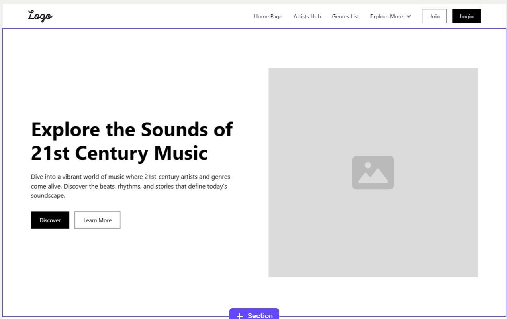
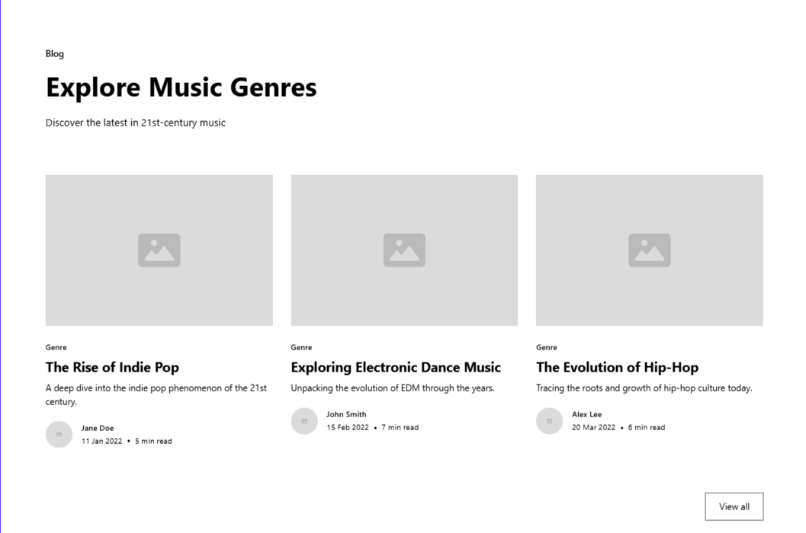
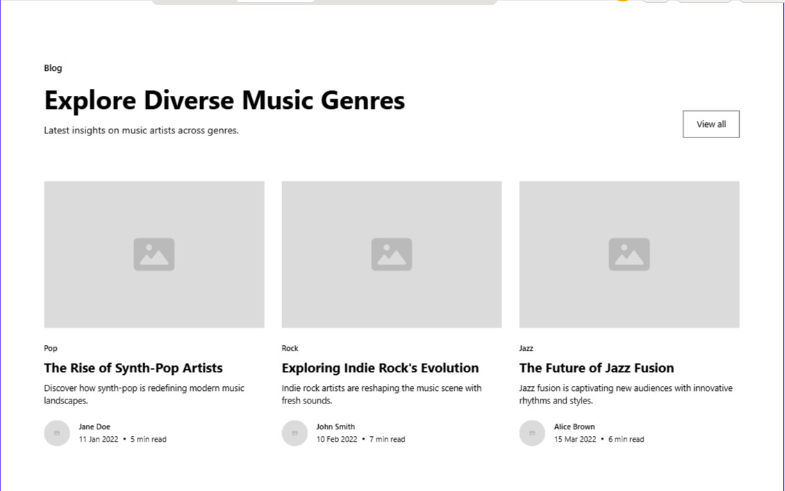

Overview
Purpose
The purpose of this website is to introduce users to ten major music genres from around the world, helping them understand each genre’s unique sound, history, and cultural impact. For each genre, the site highlights three influential or recommended artists to give users a starting point for discovering new music. Whether you’re a lifelong music lover or just beginning to explore different styles, this site serves as a fun and educational guide to expand your musical taste and appreciation.
Audience
This website is designed for music lovers of all ages who are interested in discovering and learning about different genres of music. It especially appeals to beginners who want a simple, engaging introduction to a variety of musical styles, as well as students, casual listeners, or anyone looking to expand their playlists with new artists and sounds.
Branding
Website Logo

Style Guide
Color Palette
| Primary | Secondary | Accent 1 | Accent 2 |
|---|---|---|---|
Typography
For this site, I chose fonts that reflect a unique blend of cyberpunk and lofi-cute aesthetics. The heading font, Orbitron, gives a futuristic and digital feel that fits the cyberpunk theme. The paragraph font, Quicksand, is soft and rounded, giving a relaxed, friendly vibe that matches the lofi and cute style. Together, they balance edgy and chill moods perfectly.
Heading Font: Orbitron
Paragraph Font: Quicksand
Normal paragraph example
Welcome to Explore the Sound—a chill guide to music discovery. We keep things clean and modern, while still giving off a cool, digital edge. Text is easy to read and lets the content flow naturally.
Colored paragraph example
Hover over menus, click around, and feel the smooth lofi vibes meet sharp cyberpunk glow. Every element is meant to look and feel just right—like your favorite playlist on a rainy day.
Navigation
Site Map
Genres
Artists
Welcome to *Explore the Sound*! This site is your chill guide to discovering 10 of the most popular music genres around the world. Whether you're new to music exploration or just want to expand your playlist, you’ll find simple genre overviews, handpicked artist recommendations, and a visual style that blends cyberpunk energy with lofi relaxation. Get ready to vibe, learn, and explore!
Images for the Home page
Genres
Here you'll find a breakdown of 10 unique genres: Hip-hop, Pop, Rock, EDM, Jazz, Classical, Country, R&B, Reggae, and Metal. Each section includes a short explanation of the genre’s origin, key characteristics, and cultural influence. Whether it’s the lyrical rhythm of rap or the mellow grooves of jazz, you'll get a feel for what makes each genre special.
Images for the Page 2


Artists
This page highlights 3 influential or recommended artists per genre to help you dive right into the music. From legends like Bob Marley and Mozart to modern favorites like Kendrick Lamar and Billie Eilish, you’ll find suggestions that blend classic vibes with new sounds. Each artist comes with a short bio and a reason why they stand out in their genre.
Images for the Page 3


Wireframes
Create three wireframes for your site. One for each page and list them here
Home
The home page wireframe features a large hero header with the site logo and navigation links to the Genres and Artists pages. It includes a brief intro text and two images showcasing music vibes to welcome users.
Genres
The Genres page wireframe displays a list/grid of 10 music genres with short descriptions for each. There are navigation breadcrumbs and a sidebar with filters by genre type. Images and color-coded sections help differentiate each genre.
Artists
The Artists page wireframe showcases featured artists from each genre, including photos, short bios, and links to their music or profiles. The layout uses cards with hover effects and a search bar at the top for quick artist lookup.
